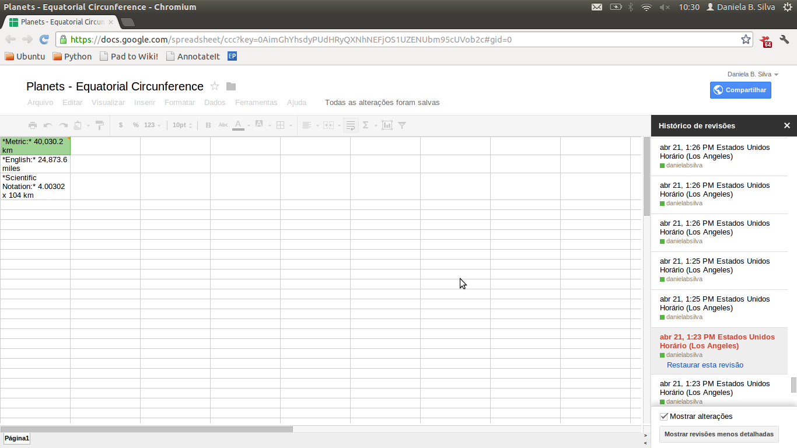

Instead of making a set of play-doh balls of randomic size, if you want to make your own play-doh planets, the coolest thing is to keep them in a real an acceptable scale. So you can compare how big or small some celestial bodies are compared to others. The idea is not being totally accurate (with play-doh, I don't even think it would be possible), but just playing with the sizes and proportions. For that, you will need some data on the planets you want to make.
Where to find the data?
There is a lot of information on different planets and stars all over the internet - thanks to the people who are building this incredible knowledge and sharing it with all of us. I could have easily gone to Wikipedia and copied all the information I needed, but I thought it would be cooler to use open spacial data instead. Open data is what you have when data of public interest is free for anyone to use, reuse, and redistribute it. There is a list of principles of open government data here. Many countries in the world are starting to release the public information they have as open government data.
But even more important than having governments releasing data is to have people who are willing to use them. So this was the kind of information I was looking for: reliable data from a public spacial program, in an open format, that could be used to calculate my play-doh planets sizes in an acceptable scale.
Nasa has its own open data catalog - the data.nasa.gov website. It references many databases that are also featured on data.gov, the american government open data portal. But I couldn't find what I needed there. As I was participating on the International Space Apps Challenge (and on a deadline), I went to the #spaceapps IRC channel and asked if anyone knew where I could find a reliable source with information on the size of Earth and other planets.
From the IRC folks, I got this link: http://solarsystem.nasa.gov/planets/index.cfm. It's a webpage with different "planets profiles", and it is perfect to make play-doh planets \o/
So to find the data you need, look at the open data portals and catalogs there are available in your country, your language or the topic of your interest. Ask Google and the Wikipedia, but don't be afraid to ask people for the information you need. IRC channels and mailing lists can be great for that.
How to get and use the data?
It's important to say that although the Nasa Solar System Exploration webpage had all the information I needed, it isn't really open data. The planets data are available in different html pages, what makes them easy to look at, but difficult to use. I couldn't simply download the data to make comparisons and calculations between different planets and the Sun.
Solution number 1 for that: to copy and paste the information I needed on a spreadsheet. It's also called the boring-but-fast-and-trivial solution. Solution number 2: to build a scraper, a program that takes all the data you want from a website and puts it on a spreadsheet, a database or a machine-readable file, on a structured format. It is the cool-but-might-take-longer solution (cool if you use your effort to grab not only the information you need, but all the relevant data on the website to make it open for others; but not so fast if all you need is a specific information to make some play-doh planets).
I was going for the solution number 2 when Rufus Pollock, who was participating on the Space Apps Challenge in São Paulo, showed me this tutorial on how to use Google Spreadsheets to import data from html pages. It was perfect for what I wanted to do. So I decided I would use Google Spreadsheets to import only the data I needed from the planets profiles pages, and also to calculate the sizes of my play-doh planets, sharing it and making it available to others who want to do the same afterwards.
The spreadsheet is public and available here. Basically, what it does is saying: these are the measures of the equatorial circumferences of the planets at the Solar System and the Sun. Changing the equatorial circumference of the Earth for any intended size, how long should be the equatorial circumference of the others? So, if the Earth was a play-doh ball with 30 cm of circunference, how big should be the play-doh ball for Pluto?
Check the documentation for the Google Spreadsheets functions. They can be used to import data to a spreadsheet and manipulate it. It's very easy to look for what you want to do with the data and a correspondent formula for it. But let me go through everything I did in the play-doh planets case:
Use the importHTML function to select and import the data: The importHTML function takes three parameters (three information you have to add to the formula, that you write on a cell of your spreadsheet): what is the URL you want to import HTML from, how is this HTML page structured (it can be "table" or "list"), and what part of it you want to import (a number). I started with the URL for the Earth: http://solarsystem.nasa.gov/planets/profile.cfm?Object=Earth. The page source code had more "table" tags than "ul"or "li", that are the common "list" tags - so "table" was my second parameter. And (although I am sure there is a smarter way to do it) I just tried and guessed in what part of the table there was the data I wanted: the Earth's equatorial circunference measure. 20 gave me an information that came before what I wanted, 30 gave me an information that was after what I wanted. And so I kept trying until I guessed 38.
=importHTML("http://solarsystem.nasa.gov/planets/profile.cfm?Object=Earth","table","38")

Use the CONCATENATE function to make the URLs: I noticed that each planet profile has an unique URL, and each URL has the name of the planet on it. Also, pages on the planets had the same data structure. So it would be easy to reproduce the same formula I had for the earth for all the other planets. What I did was to substitute the name "Earth" on the URL for a reference to another cell on the spreadsheet, that had "Earth" written on it. Using the CONCATENATE text function, I made a formula that puts together the basic URL for the planets profiles and the content of the cell that has the planet name.
=ImportHtml(CONCATENATE("http://solarsystem.nasa.gov/planets/profile.cfm?Object=",A11,"&Display=Facts"), "table", 38)
On the same row of the Earth's name, I wrote the names of the planets I wanted to import data about. So I simply dragged the inferior right corner of the cell I edited with this formula, to reproduce it to different planets, on their correspondent collums.
Observation 1: Instead of writing the names of the planets down, I could also have used the importHTML function to import them from the menu on the website - and I would end up with a much more complete spreadsheet. As I only needed 9 planets and the Sun, I decided to list them from my head.
Observation 2: The page with the profile of the Sun had a different data structure than the one with the planets. As it is a star, not a planet, I guessed that would happen, so I checked the data before using it. I had to change the last parameter on my importHTML function to import the Sun's equatorial circumference properly (it changed from "38" to "22").
After dragging the formula over row 1, to match the planets names
Use the SPLIT, the TRIM and the SUBSTITUTE functions to get to the values: The HTML from the page I was importing had the values of the equatorial circumferences of the planets as text - meaning, instead of only getting the numbers out of the website, I got a piece of text with the words "Metric:" and "Km" attached to it. I used the split function to separate the parts of the text I wanted and the TRIM text function to delete the extra spaces of the cell. To finish, I used the SUBSTITUTE text function to change the old text on a cell for this new edited value. Ending up with the numbers I needed to calculate the proportions between planets and play-doh planets :)
=(SPLIT(A2,":*")) at column B
=SUBSTITUTE(TRIM(SPLIT(C12, " ")), ",", "") at column D
Finally, calculate: With the measures of all the planets and the Sun's equatorial circumference, I could make a formula that applies an intended vallue to the Earth, divides this vallue for its real circumference, and gets to result of how much the circumference of the other celestial bodies should be at this scale. I used the math function ROUND to round the numbers and make them easier to read.
Observation 3: I spent some time trying to figure out why this seemed right but didn't work on my spreadsheet. Problem was I had my Google Docs configured to Portuguese-BR, and as I was importing data from a website in English (in PT-BR we use comma instead of float as the decimal separator, so the spreadsheet would not recognize the numbers I imported and it would not make the calculation I needed). Changing the spreadsheet language to english solved the issue.
=E9/D14 [to find the scale factor]
=ROUND(D12*$E$10; 2)
At this point, with my spreadsheet in hand, I already knew how big my play-doh planets should be to stay at a reasonable proportion. I could scale down the size of the intended Earth's circumference to find out what should be the sizes of other planets circumferences. All that I needed was some play-doh to make the planets. So I could move to the step 2 of this tutorial: how to make play-doh.